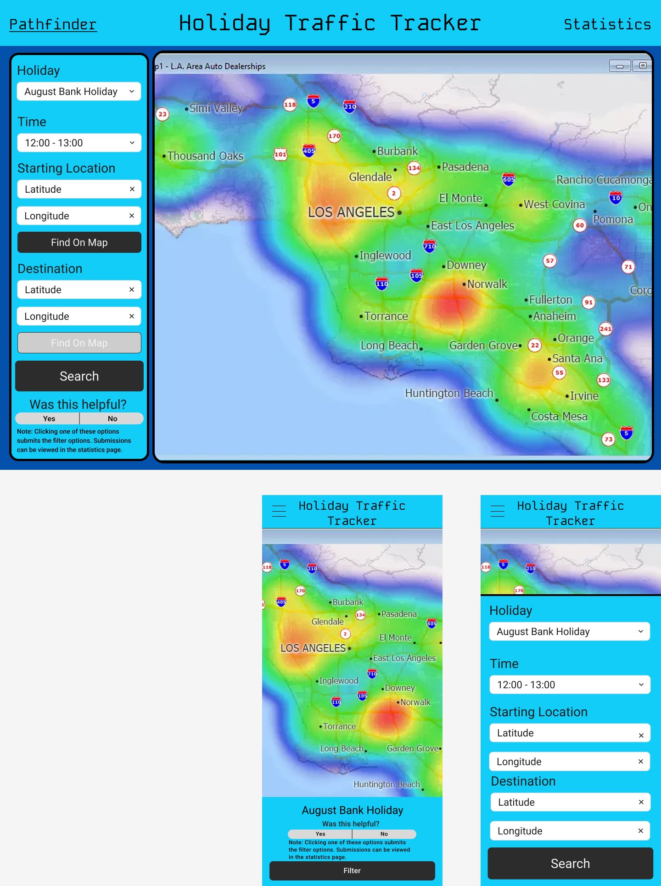
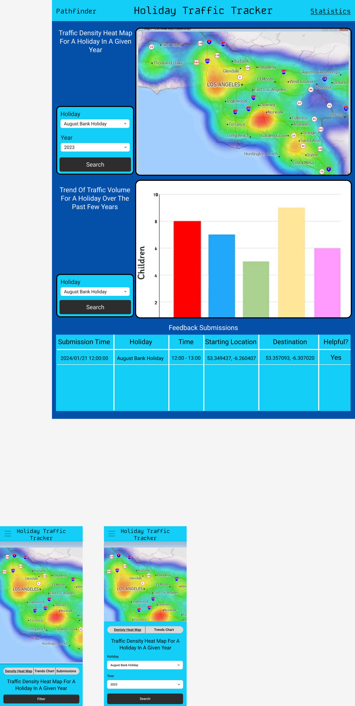

I have how I planned to meet each BR and AR in the Plan and Design section of the report. In the video I explained and demonstrated how the BRs and ARs were met. I will note that README.md was changed after this video was filmed.
I researched 3 scenarios to complete this project around. The first one was a nutrition calculator, where you could input certain conditions you would want (e.g. x grams or less of salt). The second idea was an NBA stat predictor. The last idea was a traffic congestion analyser. The nutrition calculator would have been made for people who would like to find meals that suit their conditions. The NBA stat predictor would have been made for people who bet on NBA games, such as overs and unders for certain players. The traffic idea would have been made for people who drive or just commute in general.
I decided to eliminate the nutrition calculator as one of my ideas first, as it was not a topic which I had any particular interest. I also decided that it may have been difficult to try come up with graphs for this idea (BR 2). Next, I eliminated the NBA stat predictor, as I thought the idea would be too computationally complex. This is because my idea for this project would be to analyse players' performances with and against other players and teams, but also including trends from previous games. However, in this idea, I would have to compute the performances of said other players, as they would affect the original player. As a result I concluded that BR 2 would be very difficult for this idea. This left me with the traffic idea. This idea appealed to me as I had worked on geographical data in the past (population within Dublin) and I had to create a visualisation for that, so I knew I would be more able to do this idea. I did research into existing solutions and provided on example for each of my ideas in the references. Datasets I researched for each idea are also listed in the references.
I believe this is an important project as commuting in Dublin can be difficult sometimes, so this project can be an important way to help mitigate this issue. The difference between my idea and between existing solutions, such as Google Maps or Waze, is that they use real time GPS and congestion data, while my solution uses historical congestion data. However the data I had is still just for a portion of Dublin, mostly within the M50.
I will analyse the volume data, creating density heatmaps and making bar charts with the total congestion per year on the y-axis and year on the x-axis for each holiday. By analysing the data, I can identify areas of high congestion and suggest an optimal route to minimise the congestion the user would go through, taking the distance into account as well. The diagrams will be created using Plotly (I had originally wanted to use Matplotlib, but later decided to use Plotly because of its frontend interactivity).
I plan to have a website with 4 pages as the web interface, which will be a home page, pathfinding page, statistics page, and responses page. I used Figma to create wireframes of the web pages.
I want my project to create charts showing the trend in total traffic per year for each holiday. I want my project to create density heatmaps to display the traffic volumes. I want my project to use a pathfinding algorithm that would be able to use the density heatmaps to find the best shape of routes. I want my project to be able to allow for start and destination points to be picked from a map by clicking on it.
Below I will list out the requirements and how my project met them.
year, month, day, hour, minute, and second. I then planned to put those values into an SQL file using SQLite, with a many-to-one relationship with sites data (latitude, longitude). SQL SELECT statements will be used in other parts of the project to access the data, filtering using WHERE.Statistics page.fetch. The responses will be saved in responses.db using SQLite, and will be displayed in a table on a Responses page.Pathfinding page. Here there is a density heatmap (made using Leaflet and heatmap.js) of the average volume per site over the years for a specified holiday. You could them input co-ordinates or click on the heatmap to place points, which you can then pathfind between. I plan to use the A* algorithm on the density heatmap matrix to generate the optimal path.Flowcharts for the overall pathfinding process, data filtering and cleaning, and chart creation is below.
Wireframes for the Pathfinding and Statistics page below (originally I only planned to have these 2 pages, but soon after I decided to change the structure).


Week 1:
Week 2:
Week 3:
data_filter.py)Week 4:
Week 5:
secondary_filter.py)Week 6:
app.py)index.html)Week 7:
app.py)statistics.html)Week 8:
charts.py)Week 9:
charts.py)Week 10:
charts.py)app.py)pathfinding.html)pathfinding.py)Week 11:
I had the starting data saved in Artefact/data_filter/data, inside which they are sorted by years, and follow the naming scheme SCATS{month}{year}.csv. An example of one such file is Artefact/data_filter/data/2020/SCATSJanuary2020.csv. The files Artefact/data_filter/data_filter and Artefact/data_filter/secondary_filter are files which are run in that order to filter and clean the data. After running Artefact/data_filter/data_filter, the data will be filtered and cleaned to be stored in Artefact/data_filter/output_data, within which has the same structure as Artefact/data_filter/data. This stores the data of only the dates I will use, with a reformatted time (separated into year, month, day, hour, minute, second). After running Artefact/data_filter/secondary_filter, the data is summed up by site (the data is separated by multiple sensors at each site) and stored up in the SQL file Artefact/data_filter/database.db.
The data from database.db was used to create the bar charts and heatmaps. I had to generate the holiday dates for each year to create these visualisations as most holidays changed dates every year. I summed up the total traffic in a year for the years of which I had data for that holiday, and plotted it on a bar chart. I also took the latitude, longitude, and traffic volume of each row which corresponded to a certain holiday on a certain year to create the heatmaps.
I faced a few issues while working on the project:
ImportError: attempted relative import with no known parent package, since my code was split across 3 modules. The solution that I found was to run everything as python -m Artefact.module.file, as this allows for the parent packages to be known..innerHTML of the parent, the visualisation either didn't show up, or didn't have any data. I still don't know why this was the case, but I found a solution. I decided to display them using <iframe>s, changing the src using JavaScript to change the visualisation.The A* algorithm that I used is a modified version of Dijkstra's algorithm, but with a heuristic added on, which encourages the algorithm to look for paths towards the destination. The pseudocode for the A* algorithm is below.
input start_latitude, start_longitude, end_latitude, end_longitude, heatmap_matrix, latitude_edges, longitude_edges
set start_latitude to the closest value from latitude_edges
set start_longitude to the closest value from longitude_edges
set destination_latitude to the closest value from latitude_edges
set destination_longitude to the closest value from longitude_edges
set start_point to be a tuple of start_latitude and start_longitude
set destination_point to be a tuple of destination_latitude and destination_longitude
set came_from to be an empty dictionary
set g_score to be a dictionary with keys as the points and all values to be infinity
set g_score of start_point to 0
set f_score to be a dictionary with keys as the points and all values to be infinity
set f_score of start_point to be the Euclidean distance between it and the destination_point
set open_set to contain tuple of the f_score of the start_point and the start_point itself
while loop:
pop the smallest value from open_set, ordered by the f_scores
set current to popped off point
if the current is the desination_point:
retrace steps using came_from to form the path
return path
set neighbours to the neighbouring cells in the matrix (includes diagonal)
for loop neighbours:
set neighbour to next element
set tentative_g_score to the current element's g_score plus the weight (from the matrix) of the neighbour point
if the tentative_g_score is less than the g_score of the neighbour:
set came_from of the key neighbour to the value current
set g_score of the neighbour to the tentative_g_score
set f_score of the neighbour to the g_score of the neighbour plus the Euclidean distance of the neighbour and the destination
if the neighbour is not in the open_set:
push a tuple of the f_score of the neighbour and the neighbour onto the open_set
return an empty list
I was only able to do testing by hand and was unable to set up any unittests, as I wasn't sure how I'd verify the validity of some of the responses (e.g. heatmaps being created). Below are some of the cases I tested.
| Action | Expected Result | Actual Result | Pass/Fail | Reason |
|---|---|---|---|---|
| Changed holiday using forms | Visualisations would change to the correct ones | They changed correct graphs | Pass | The charts were able to successfully change to correspond to the holiday selected |
| Selected year to be 2024 and then tried to select an invalid holiday (missing data) | Disables the invalid holiday as options | Invalid holiday disables | Pass | The invalid holidays were disabled, so they couldn't be selected, as the corresponding graphs didn't exist |
| Select invalid 2024 holidays before changing the year to 2024, then changing the year to 2024 | Change the holiday to a valid one | Holiday changes to "New Year's Day" | Pass | The holiday was changed so the user can't have an invalid holiday selected |
| Action | Expected Result | Actual Result | Pass/Fail | Reason |
|---|---|---|---|---|
| Changed holiday using forms | Heatmap would change to the have the correct data | The heatmap got the correct data | Pass | The heatmap was able to successfully change to get data that corresponded to the holiday selected |
| Set end time to be the same as or before start time | Alerts the user of the error | Alerts the user | Pass | The heatmap wasn't changed as the inputs were invalid |
| Trying to submit empty latitudes and longitudes | Popup saying there's missing fields | Popups show | Pass | The user is made aware of missing fields |
| Trying to submit invalid latitudes and longitudes | Alert saying there's invalid fields | Alert shows | Pass | The user is made aware that the one of the latitudes or longitudes is invalid |
| Submits correct data for pathfinding | Path generated | Path is plotted on the map | Pass | The intended response occurs |
| Tries to give feedback with incorrect fields (co-ordinates or times) | Alerts user of the issue | Alert shows | Pass | The user is made aware of the incorrect data |
| Tries to give feedback with empty fields | Popup saying there's missing fieldsd | Popups show | Pass | The user is made aware of missing fields |
| Feedback given with valid fields | Alert thanking user for feedback shows | Alert shows | Pass | Feedback is successfully sent to the server and stored |
I enjoyed working on this project. I believe that my project met the BRs and ARs quite well. However, there are things that I would like to have improved on.
First of all, since the data is there, I would have liked to repeat the process for every single day, to create a more day-to-day tool rather than a seasonal one. However, the sheer amount of data was too much for this project.
Secondly, I would have liked to have more data in different areas, as the vast majority of the volume data that I had lay within the M50. Once again, this would be a lot of data, but given a lot more time I think that this would be possible. This would allow for this project to benefit more people.
Thirdly, I would have liked to be able to collect data on the users, such as their speed and GPS co-ordinates, and save and use it to help calculate more accurate routes.
Fourthly, I would have liked to be able to access road data, and suggest real routes rather than a vague outline of the shape of a path. However, the data I found was probably not comprehensive enough, and would have complicated the project too much.
Fifthly, I would have tweaked the pathfinding algorithm a bit, as currently the relationship between how much the distance and the volume affects it could be improved.
Sixthly, in the Pathfinding page I forgot to join the markers to the path if the markers lay outside the heatmap area. I would go back and change this if I had more time.
Lastly, given more time, I would have liked to make the mobile responsiveness of the website nicer, like in my wireframes. Unfortunately, I never really got around to improving them, and they remain as vertical versions of their desktop counterparts.
Technologies:
Python modules/libraries/frameworks:
HTML, CSS, JavaScript modules/libraries/frameworks:
Other:
report.md to an index.html (I wrote my report in Markdown before turning it into HTML)Existing Solutions:
Datasets:
| Section | Word Count |
|---|---|
| 1. Meeting the brief | 46 + (Video) |
| 2. Investigation | 473 |
| 3. Plan and Design | 580 |
| 4. Create | 1021 |
| 5. Evaluation | 310 |
| Total: | 2430 |